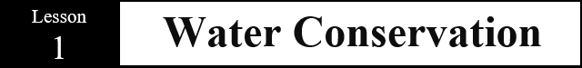
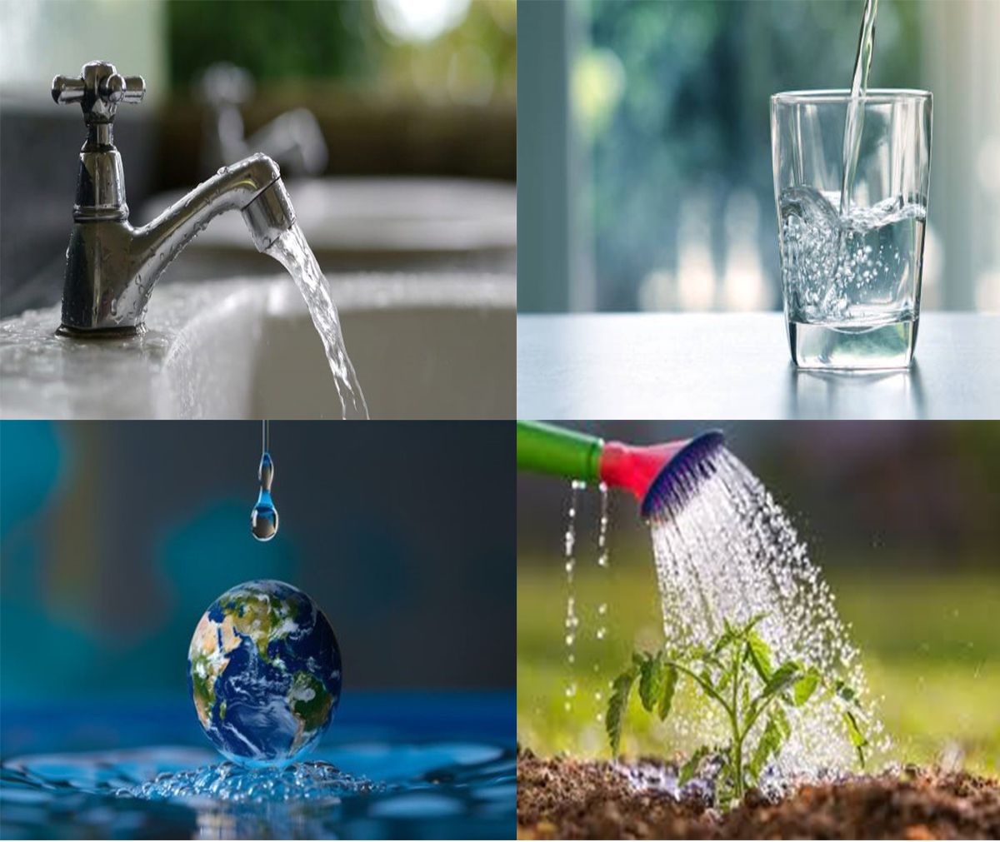
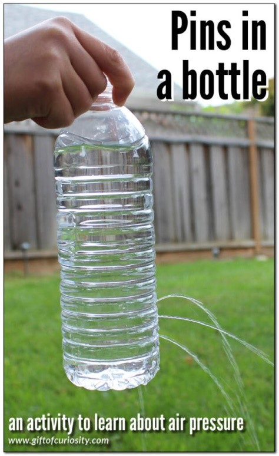

Overview
Hello, young scientist! Welcome to the general knowledge of water conservation. In this module, we’ll explore the importance of water, ways to conserve it, and how our actions impact the environment. Let’s dive into the exciting world of water conservation!
WHAT I NEED TO KNOW
Learning Competency: Use information from secondary sources to describe the possible effects of human activities, such as deforestation, pollution, and introduction of invasive species, on living things in an ecosystem.
Have you ever tried leaving the tap running while brushing your teeth? It seems like a small thing, but did you know that a single drip of water can add up to gallons over time? Water is one of our most valuable resources, yet it's easy to forget how quickly it can be wasted. In this module, we’ll explore the importance of water conservation and how small changes in our daily habits can make a big difference. Are you ready to learn how to save water and help protect our planet's future?
This module focuses on the general knowledge of water conservation. It aims to explain the importance of preserving this vital resource and the impact of water scarcity on our environment. It discusses the various ways in which water is used, how it can be wasted, and most importantly, how we can conserve it.
At the end of this module, you are expected to:
A. Identify the key reasons why water conservation is crucial for both the environment and human survival.
B. Demonstrate practical water-saving techniques that can be applied in daily life to reduce water wastage.
C. Evaluate the effectiveness of various water conservation strategies and their impact on both local and global water resources.
Before you start, answer the following pre-assessment first.
WHAT I KNOW
Direction: Choose the letter of the correct answer. Write your answer on a separate sheet of paper.
1. Which of the following best defines water conservation?
A. The process of boiling water to make it safe
B. The protection and wise use of water resources
C. Storing rainwater in containers
D. Using water for recreational purposes
2. Why is it important to conserve water?
A. Water is unlimited and can be used freely
B. To avoid paying high water bills
C. To ensure availability of water for future generations
D. To keep rivers and lakes full all the time
3. Which human activity uses the most freshwater globally?
A. Cooking
B. Industrial use
C. Agriculture
D. Recreation
4. Which of the following is a simple water-saving habit at home?
A. Taking long showers
B. Leaving the tap running while brushing teeth
C. Watering plants during midday
D. Fixing leaking faucets promptly
5. What is a common result of water wastage?
A. Increased rainfall
B. Water pollution
C. Water scarcity
D. Soil fertility
6. What is a rainwater harvesting system used for?
A. Filtering water from rivers
B. Collecting and storing rainwater for use
C. Purifying tap water
D. Generating electricity
7. Which of the following sources provides freshwater?
A. Oceans
B. Lakes
C. Saltwater
D. Seas
8. How can schools help in conserving water?
A. Allowing taps to leak
B. Encouraging water balloon games
C. Teaching water conservation in classes
D. Banning water use completely
9. What is the main cause of water scarcity in many regions?
A. Too much rainfall
B. Overuse and pollution of water sources
C. Growing trees
D. Cold weather
10. What role does technology play in water conservation?
A. It increases water wastage
B. It replaces the need for water
C. It helps in monitoring and reducing water usage
D. It pollutes water sources
WHAT'S IN

We use it to drink, cook, clean, and grow food. It falls from the sky, flows in rivers, and fills our oceans. Life on Earth would not exist without it. Yet, this precious resource is often wasted.
But what really is this vital resource?
WHAT’S NEW
WATER CONSERVATION
- The practice of using water efficiently to reduce unnecessary water usage.
- A response to growing water scarcity and the increasing demand for clean, usable water.
- Conserving water ensures that future generations have access to this essential resource.
- Fixing Leaks – A single leaking faucet can waste hundreds of liters of water per day.
- Using Water-Efficient Appliances – Low-flow showerheads and dual-flush toilets help reduce water use.
- Practicing Smart Watering – Watering plants during early morning or late afternoon reduces evaporation.
- Reusing Water – Collecting rainwater or reusing laundry water for cleaning helps minimize waste.
- Turning Off Taps – Simple actions like turning off the tap while brushing teeth can save liters daily.
Water conservation is the practice of using water wisely and efficiently to preserve this essential natural resource. The concept is based on the understanding that freshwater is limited, and its availability is under increasing pressure due to population growth, pollution, and climate change.
Water on Earth exists in a continuous cycle known as the water cycle—evaporation, condensation, precipitation, and collection. While this cycle helps replenish water sources, the amount of usable freshwater is less than 1% of all water on Earth. The rest is either saltwater in oceans or frozen in polar ice caps.
Water conservation involves reducing wastage, protecting water quality, and improving water use efficiency. The goal is not just to save water today, but to ensure its availability for future generations, protect ecosystems, and reduce the energy required to process and deliver water.
Water conservation practices can be grouped into two main types:
- Behavioral Changes – These involve modifying our daily habits to use less water. For example, turning off the tap when not in use or collecting rainwater for watering plants.
- Technological Solutions– These include using water-saving devices like low-flow fixtures, smart irrigation systems, and wastewater treatment technologies.
Just like energy conservation is essential for sustainability, water conservation is key to environmental balance, economic development, and public health.
We will measure water usage typically in liters (L) or cubic meters (m³), and reducing even small amounts per person can lead to massive savings at the community or national level.
Let us now explore how our actions affect water supply and what steps we can take to become water-wise citizens.
Activity 1: The Leaky Bottle adapted – Source: Original
Objective:
Understand how water is lost through leaks and how small leaks can lead to big water wastage over time.
Materials:
- 1 small plastic bottle with a cap
- Pin or needle
- Measuring cup
- Water
- Stopwatch or timer
- Tape and paper for labeling
Procedure
- Fill the plastic bottle with water and tightly cap it.
- Using a pen or needle, carefully poke a small hole near the bottom of the bottle.
- Place a bottle over sink , basin, or bucket to catch the dripping water.
- Start the timer and observe how much water is collected in 5 minutes.
- Use the measuring cup to find out how much water was wasted
- Multiply that amount by 12 to estimate how much water would be wasted in 1 Hour
Guide Questions:
- How much water leaked out of the bottle in 5 minutes?
- Were you surprised by the total water wasted in an hour? Why or why not?
- What does tihis activity show about the importance of fixing leaks at home?
- What are other ways unknowingly waste water?
- How can we prevent this small wastes from turning into a big problem?
To summarize your learning in this module, complete the folloeing statements by filling the missing word(s):
- ____ is the careful and wise use of water resources to prevent wastage and ensure availability for future generations.
- Only about ____ percent of Earth's water is freshwater that is safe and usable for humans.
- Fixing leaks, using low-flow mixtures, and turning off taps when not in use are examples of water ____ strategies.
- Water scarcity can result from both natural causes and human ___ .
- Saving water also helps save ____ because energy is needed to treat, pump, and distribute water.
Solve the following word problem:
- 1. Maria noticed that a faucet in her home was leaking at a rate of 1 drop per second.
She placed a container under the faucet and discovered that it collected 4 liters of water in 24 hours.
If she leaves the leak unattended for 30 days, how much water will be wasted in a month?
Show your solution and final answer.
Hint:
- Use the information that 4 liters are wasted per day.
- Multiply by the number of days in a month.
Direction: Write the letter of the correct answer on a separate piece of paper.
- What is the main reason why water conservation is important?
- Which of the following activities wastes the most water?
- What is the term for collecting and storing rainwater for future use?
- What percentage of Earth's water is available for human use?
- Which of the following is an example of a water-saving device?
A. Water is unlimited and easily available.
B. It helps reduce the cost of water bills.
C. Freshwater is a limited resource that needs to be preserved.
D. Water is only needed for drinking.
A. Watering plants in the early morning
B. Leaving the tap running while brushing your teeth
C. Using a dishwasher
D. Taking a shower
A. Desalination
B. Rainwater harvesting
C. Water filtration
D. Water diversion
A. 70%
B. 2.5%
C. 97.5%
D. 1%
A. High-pressure showerhead
B. Dual-flush toilet
C. Leaky faucet
D. Open watering system

Answer Key:
What I Know- B. The protection and wise use of water resources
- C. To ensure availability of water for future generations
- C. Agriculture
- D. Fixing leaking faucets promptly
- C. Water scarcity
- B. Collecting and storing rainwater for use
- B. Lakes
- C. Teaching water conservation in classes
- B. Overuse and pollution of water sources
- C. It helps in monitoring and reducing water usage
HEAT
What I Have Learned
- Water conservation
- 1
- conservation
- activities (or "actions")
- energy
- Amount of water wasted per day:
- From the problem, Maria collected 4 liters of water in 24 hours. So, 4 liters are wasted per day.
- Amount of water wasted in 30 days:
- Multiply the daily wastage by 30 days: 4 liters/day×30 days=120
Final Answer:
If Maria leaves the leak unattended for 30 days, 120 liters of water will be wasted in a month.
- C. Freshwater is a limited resource that needs to be preserved.
- B. Leaving the tap running while brushing your teeth
- B. Rainwater harvesting
- B. 2.5%
- B. Dual-flush toilet
References
Books:Ogsok, L. (2020). Science7_Q4_M2A_v2. Scribd.
{kind=link}